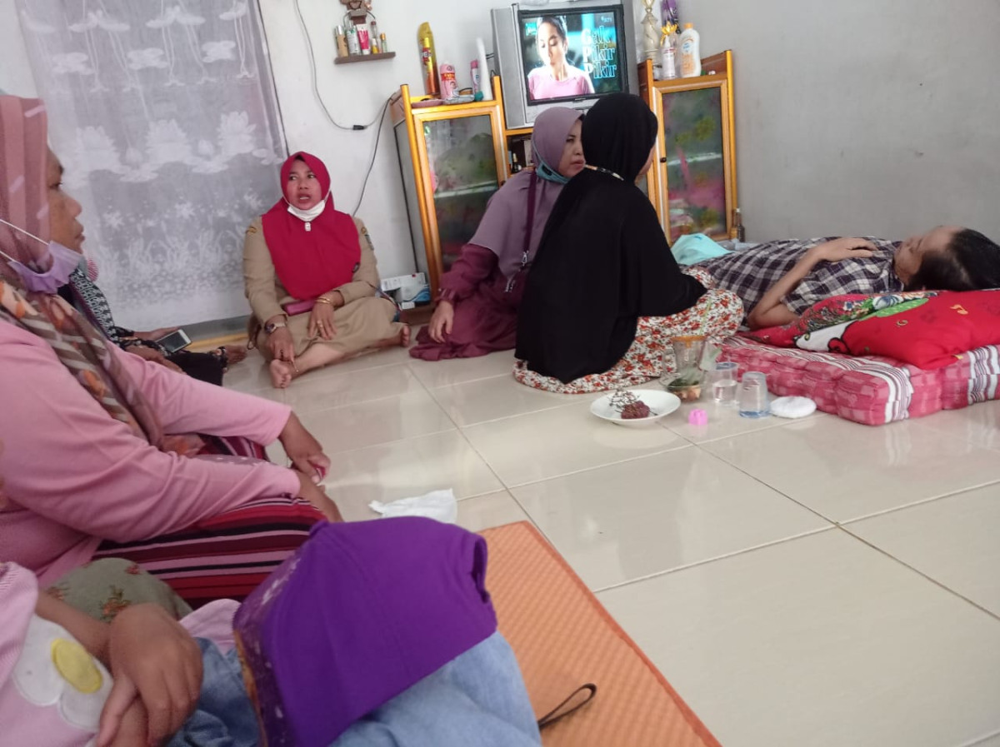

Setiap paginya, masyarakat Padukuhan Klumpit memiliki kebiasaan untuk ngeteh panas (mengonsumsi teh panas) untuk meredakan dingin setelah bangun tidur

Bila terdapat warga yang sakit, masyarakat akan berbondong-bondong menjenguk orang yang sakit.

keseharian masyarakat pada pagi harinya adalah berkunjung ke ladang untuk memberi pakan makanan kepada hewan ternak, begitu juga pada sore harinya sebelum maghrib.